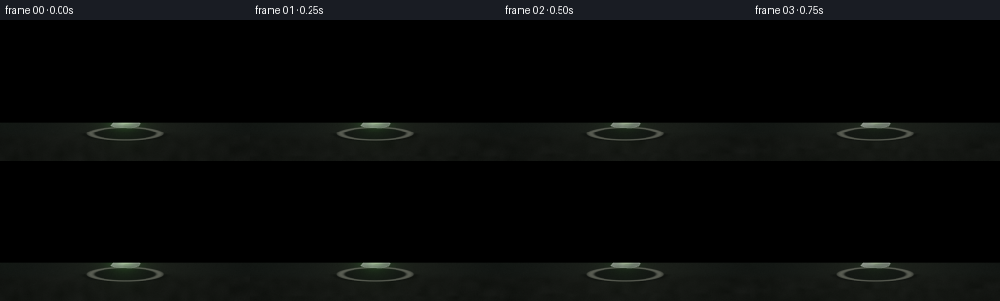
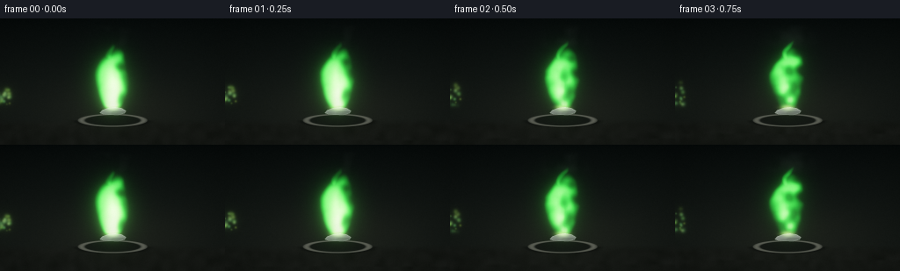
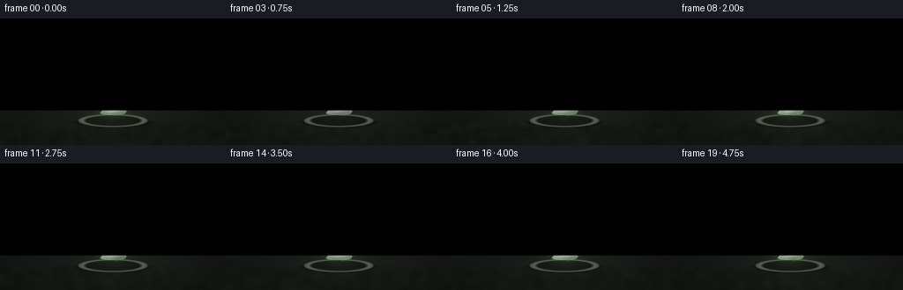
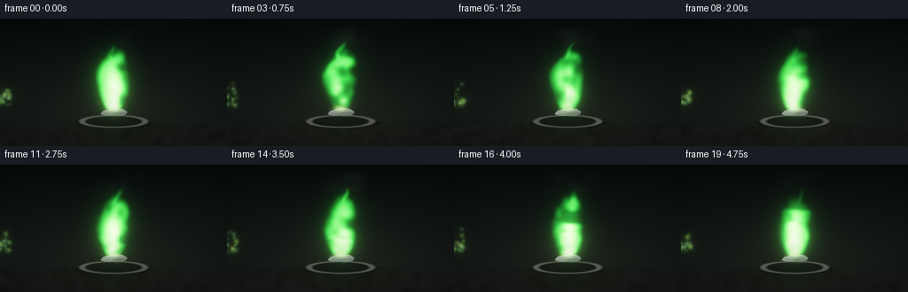

CODING AGENTS AS PIXEL WORLD MODELS
traex/DeepSeek-V4.1-Flash · material_0007
点击播放 · 原生 RGB 像素
逐轮保存的候选
回放视频、检查图与代码变化。
每份候选均可单独播放。实际图片检查记录在下方工具轨迹中。
候选 01播放与检查图
点击播放 · 原生 RGB 像素


展开代码变化
--- 上一保存版本
+++ 本次保存版本
@@ -0,0 +1,269 @@
+from pathlib import Path
+
+import cv2
+import numpy as np
+from PIL import Image
+from scipy.ndimage import gaussian_filter
+
+import artifact_io
+
+
+ROOT = Path(__file__).resolve().parent
+WIDTH = 256
+HEIGHT = 144
+FRAMES = 20
+FPS = 4.0
+SCALE = 3
+W = WIDTH * SCALE
+H = HEIGHT * SCALE
+
+
+def smoothstep(edge0, edge1, value):
+ t = np.clip((value - edge0) / (edge1 - edge0), 0.0, 1.0)
+ return t * t * (3.0 - 2.0 * t)
+
+
+def make_noise_bank(rng, count, low_h, low_w, temporal_sigma, spatial_sigma):
+ noise = rng.standard_normal((count, low_h, low_w), dtype=np.float32)
+ gaussian_filter(
+ noise,
+ sigma=(temporal_sigma, spatial_sigma, spatial_sigma),
+ mode="reflect",
+ output=noise,
+ )
+ noise -= noise.mean(axis=(1, 2), keepdims=True)
+ noise /= noise.std(axis=(1, 2), keepdims=True) + 1e-6
+ return noise
+
+
+def resized_noise(bank, frame, vertical_scroll=0.0):
+ field = bank[frame]
+ if vertical_scroll:
+ field = np.roll(field, -int(round(vertical_scroll)), axis=0)
+ return cv2.resize(field, (W, H), interpolation=cv2.INTER_CUBIC)
+
+
+def flame_envelope(xx, yy, cx, base_y, height, width, sway, phase, time, n1, n2):
+ u = (base_y - yy) / height
+ uu = np.clip(u, 0.0, 1.0)
+ center = (
+ cx
+ + sway * (uu ** 1.35) * np.sin(2.65 * np.pi * uu + phase + 0.42 * time)
+ + 0.0035 * np.sin(2.0 * np.pi * 0.31 * time + phase) * (uu ** 1.7)
+ + 0.0045 * n2 * uu
+ )
+ profile = (0.29 + 0.94 * np.sin(np.pi * uu) ** 0.58) * (1.0 - uu) ** 0.12
+ local_width = width * profile + 1e-5
+ radial = np.clip(1.0 - (np.abs(xx - center) / local_width) ** 1.72, 0.0, 1.0)
+ vertical = smoothstep(-0.035, 0.07, u) * (1.0 - smoothstep(0.70, 1.02, u))
+ turbulence = np.clip(0.70 + 0.29 * n1 + 0.13 * n2, 0.30, 1.28)
+ return (radial ** 1.12) * vertical * turbulence
+
+
+def add_point_glow(target, x, y, radius, color, strength):
+ x0 = max(0, int(np.floor(x - radius * 3.0)))
+ x1 = min(W, int(np.ceil(x + radius * 3.0)) + 1)
+ y0 = max(0, int(np.floor(y - radius * 3.0)))
+ y1 = min(H, int(np.ceil(y + radius * 3.0)) + 1)
+ if x0 >= x1 or y0 >= y1:
+ return
+ gy, gx = np.mgrid[y0:y1, x0:x1]
+ blob = np.exp(-((gx - x) ** 2 + (gy - y) ** 2) / (2.0 * radius * radius))
+ target[y0:y1, x0:x1] += blob[:, :, None] * np.asarray(color, np.float32) * strength
+
+
+def render_frame(frame_index, flame_noise, fine_noise, grain_noise, particles):
+ t = frame_index / FPS
+ yy, xx = np.mgrid[0:H, 0:W].astype(np.float32)
+ xx /= W
+ yy /= H
+
+ n1 = resized_noise(flame_noise, frame_index, vertical_scroll=0.9 * frame_index)
+ n2 = resized_noise(fine_noise, frame_index, vertical_scroll=1.7 * frame_index)
+
+ base_y = 0.713
+ cx = 0.500
+ main = flame_envelope(xx, yy, cx, base_y, 0.505, 0.070, 0.019, 0.15, t, n1, n2)
+ left = flame_envelope(xx, yy, cx - 0.013, base_y + 0.003, 0.435, 0.050, 0.016, 2.10, t, n1, n2)
+ right = flame_envelope(xx, yy, cx + 0.014, base_y + 0.001, 0.470, 0.052, 0.017, 4.25, t, n1, n2)
+ wisp = flame_envelope(xx, yy, cx + 0.006, base_y - 0.006, 0.555, 0.025, 0.025, 5.10, t, n1, n2)
+ body = np.maximum.reduce((main, left * 0.94, right * 0.97, wisp * 0.78))
+ body *= 0.985 + 0.018 * np.sin(2.0 * np.pi * 0.43 * t + 0.4) + 0.012 * np.sin(2.0 * np.pi * 0.91 * t + 1.1)
+ body = np.clip(body, 0.0, 1.35)
+
+ outer = smoothstep(0.025, 0.55, body)
+ middle = smoothstep(0.30, 0.86, body)
+ u_core = (base_y - yy) / 0.46
+ core_vertical = smoothstep(-0.04, 0.08, u_core) * (1.0 - smoothstep(0.35, 0.88, u_core))
+ core_center = cx + 0.004 * np.sin(2.0 * np.pi * 0.33 * t + 0.7)
+ core_band = np.exp(-((xx - core_center) / 0.031) ** 2) * core_vertical
+ hot = np.clip((body - 0.52) / 0.48, 0.0, 1.0) * core_band
+ hot *= 0.86 + 0.10 * n2
+
+ emission = (
+ outer[:, :, None] * np.array([0.040, 0.49, 0.075], np.float32)
+ + middle[:, :, None] * np.array([0.22, 0.94, 0.16], np.float32)
+ + hot[:, :, None] * np.array([0.88, 1.00, 0.63], np.float32)
+ )
+
+ ignition = np.exp(-(((xx - cx) / 0.023) ** 2 + ((yy - 0.704) / 0.019) ** 2))
+ ignition *= 0.80 + 0.10 * np.sin(2.0 * np.pi * 0.58 * t + 0.5)
+ emission += ignition[:, :, None] * np.array([0.62, 0.88, 0.34], np.float32)
+
+ for x, y, radius, color, strength in particles:
+ age_fraction = (t + y[1]) % y[2] / y[2]
+ px = (x[0] + x[1] * age_fraction + 0.007 * np.sin(2.0 * np.pi * (age_fraction * 0.9 + x[2]))) * W
+ py = (base_y - 0.025 - y[0] * age_fraction) * H
+ fade = np.sin(np.pi * age_fraction) ** 0.65
+ if fade > 0.03:
+ add_point_glow(emission, px, py, radius, color, strength * fade)
+
+ small_glow = cv2.GaussianBlur(emission, (0, 0), sigmaX=5.5, sigmaY=5.5)
+ medium_glow = cv2.GaussianBlur(emission, (0, 0), sigmaX=18.0, sigmaY=18.0)
+ broad_glow = cv2.GaussianBlur(emission, (0, 0), sigmaX=48.0, sigmaY=48.0)
+ glow = 0.62 * small_glow + 0.34 * medium_glow + 0.22 * broad_glow
+
+ top = np.array([0.010, 0.017, 0.016], np.float32)
+ bottom = np.array([0.055, 0.064, 0.055], np.float32)
+ gradient = (yy ** 0.78)[:, :, None]
+ scene = top * (1.0 - gradient) + bottom * gradient
+
+ warm_pool = np.exp(-(((xx - 0.53) / 0.34) ** 2 + ((yy - 0.72) / 0.24) ** 2))
+ scene += warm_pool[:, :, None] * np.array([0.020, 0.018, 0.011], np.float32)
+ scene += glow * 0.26
+
+ table = smoothstep(0.785, 0.855, yy)
+ table_texture = 0.5 + 0.5 * n2
+ table_color = np.array([0.045, 0.048, 0.038], np.float32) + table_texture[:, :, None] * 0.010
+ scene = scene * (1.0 - table[:, :, None] * 0.76) + table_color * table[:, :, None] * 0.76
+ scene += table[:, :, None] * glow * 0.10
+
+ smoke_center = cx + 0.030 * np.sin(0.56 * t + 0.2) + (0.19 - yy) * 0.13
+ smoke_band = smoothstep(0.035, 0.105, yy) * (1.0 - smoothstep(0.185, 0.255, yy))
+ smoke_texture = np.clip(0.38 + 0.34 * n1 + 0.20 * n2, 0.0, 1.0)
+ smoke = np.exp(-((xx - smoke_center) / 0.072) ** 2) * smoke_band * smoke_texture
+ scene = scene * (1.0 - 0.16 * smoke[:, :, None]) + np.array([0.17, 0.20, 0.18], np.float32) * (0.16 * smoke[:, :, None])
+
+ dish_cx, dish_cy = 0.500, 0.806
+ dish_rx, dish_ry = 0.155, 0.052
+ radius = np.sqrt(((xx - dish_cx) / dish_rx) ** 2 + ((yy - dish_cy) / dish_ry) ** 2)
+ dish = 1.0 - smoothstep(0.975, 1.018, radius)
+ dish_shadow = np.exp(-((radius - 1.04) / 0.10) ** 2) * (yy > dish_cy)
+ scene *= 1.0 - 0.32 * dish_shadow[:, :, None]
+ rim = dish * np.exp(-((radius - 0.895) / 0.085) ** 2)
+ inner = dish * (1.0 - smoothstep(0.76, 0.84, radius))
+ dish_body_color = np.array([0.150, 0.157, 0.140], np.float32)
+ scene = scene * (1.0 - 0.80 * dish[:, :, None]) + dish_body_color * (0.80 * dish[:, :, None])
+ rim_color = np.array([0.34, 0.35, 0.30], np.float32)
+ rim_color = rim_color + glow.mean(axis=2, keepdims=True) * 0.28
+ scene = scene * (1.0 - 0.72 * rim[:, :, None]) + rim_color * (0.72 * rim[:, :, None])
+ inner_color = np.array([0.033, 0.038, 0.031], np.float32) + glow * 0.22
+ scene = scene * (1.0 - 0.90 * inner[:, :, None]) + inner_color * (0.90 * inner[:, :, None])
+
+ chunk_points = np.array(
+ [
+ [0.443, 0.748],
+ [0.455, 0.724],
+ [0.480, 0.709],
+ [0.510, 0.702],
+ [0.542, 0.711],
+ [0.560, 0.731],
+ [0.553, 0.751],
+ [0.525, 0.763],
+ [0.486, 0.762],
+ [0.458, 0.756],
+ ],
+ np.float32,
+ )
+ chunk_points[:, 0] *= W
+ chunk_points[:, 1] *= H
+ chunk_mask = np.zeros((H, W), np.uint8)
+ cv2.fillPoly(chunk_mask, [np.round(chunk_points).astype(np.int32)], 255)
+ chunk_mask_f = chunk_mask.astype(np.float32) / 255.0
+
+ local_x = (xx - 0.50) / 0.065
+ local_y = (yy - 0.733) / 0.034
+ metal_tone = 0.31 + 0.16 * np.clip(1.0 - local_y, 0.0, 1.0) + 0.035 * n2
+ metal_tone += 0.08 * np.clip(-local_x + 0.3, 0.0, 1.0)
+ metal = metal_tone[:, :, None] * np.array([0.95, 1.00, 0.94], np.float32)
+ facet = np.zeros((H, W), np.float32)
+ facet += smoothstep(0.04, 0.16, local_y) * (1.0 - smoothstep(0.17, 0.33, local_y)) * (local_x > 0.02)
+ facet += 0.65 * smoothstep(-0.16, -0.02, local_x) * (local_y > 0.0)
+ metal *= (1.0 - 0.18 * facet[:, :, None])
+
+ kernel = np.ones((3, 3), np.uint8)
+ inner_mask = cv2.erode(chunk_mask, kernel, iterations=1)
+ edge = chunk_mask - inner_mask
+ edge_glow = cv2.GaussianBlur(edge.astype(np.float32) / 255.0, (0, 0), 1.2)
+ metal += edge_glow[:, :, None] * np.array([0.24, 0.32, 0.22], np.float32)
+ metal += glow * chunk_mask_f[:, :, None] * 0.30
+ scene = scene * (1.0 - chunk_mask_f[:, :, None]) + metal * chunk_mask_f[:, :, None]
+
+ contact = np.exp(-(((xx - cx) / 0.030) ** 2 + ((yy - 0.707) / 0.013) ** 2))
+ scene += contact[:, :, None] * np.array([0.12, 0.20, 0.07], np.float32)
+
+ scene += emission
+ scene += glow * 0.55
+
+ mapped = 1.0 - np.exp(-scene * 1.55)
+ mapped = mapped ** 0.92
+ luminance = mapped.mean(axis=2, keepdims=True)
+ mapped += (1.0 - luminance) * np.array([0.000, 0.006, 0.005], np.float32)
+ mapped = np.clip(mapped, 0.0, 1.0)
+
+ gx = (xx - 0.5) / 0.72
+ gy = (yy - 0.47) / 0.82
+ vignette = np.clip(1.0 - 0.34 * (gx * gx + gy * gy) ** 0.78, 0.45, 1.0)
+ mapped *= vignette[:, :, None]
+
+ grain = cv2.resize(grain_noise[frame_index], (W, H), interpolation=cv2.INTER_CUBIC)
+ mapped += grain[:, :, None] * 0.007
+ mapped = np.clip(mapped * 255.0 + 0.5, 0, 255).astype(np.uint8)
+ return cv2.resize(mapped, (WIDTH, HEIGHT), interpolation=cv2.INTER_AREA)
+
+
+def make_particles(rng):
+ particles = []
+ for _ in range(31):
+ start_x = rng.uniform(-0.038, 0.038)
+ horizontal_speed = rng.uniform(-0.012, 0.012)
+ phase = rng.uniform(0.0, 1.0)
+ rise = rng.uniform(0.07, 0.22)
+ life = rng.uniform(1.0, 2.7)
+ offset = rng.uniform(0.0, life)
+ radius = rng.uniform(0.7, 1.8) * SCALE
+ color = np.array(
+ [rng.uniform(0.35, 0.70), rng.uniform(0.82, 1.00), rng.uniform(0.16, 0.42)],
+ np.float32,
+ )
+ strength = rng.uniform(0.12, 0.42)
+ particles.append(
+ (
+ (start_x, horizontal_speed, phase),
+ (rise, offset, life),
+ radius,
+ color,
+ strength,
+ )
+ )
+ return particles
+
+
+def main():
+ rng = np.random.default_rng(20261111)
+ flame_noise = make_noise_bank(rng, FRAMES, 26, 54, 1.35, 2.0)
+ fine_noise = make_noise_bank(rng, FRAMES, 58, 106, 1.15, 1.45)
+ grain_noise = rng.standard_normal((FRAMES, H, W), dtype=np.float32)
+ gaussian_filter(grain_noise, sigma=(0.0, 0.6, 0.6), output=grain_noise)
+ particles = make_particles(rng)
+
+ frames = []
+ for index in range(FRAMES):
+ frames.append(render_frame(index, flame_noise, fine_noise, grain_noise, particles))
+ print(f"rendered frame {index + 1:02d}/{FRAMES}", flush=True)
+ frames = np.stack(frames, axis=0)
+ artifact_io.save(frames, ROOT)
+
+
+if __name__ == "__main__":
+ main()
候选 02播放与检查图
点击播放 · 原生 RGB 像素


展开代码变化
--- 上一保存版本
+++ 本次保存版本
@@ -52,7 +52,7 @@
+ 0.0035 * np.sin(2.0 * np.pi * 0.31 * time + phase) * (uu ** 1.7)
+ 0.0045 * n2 * uu
)
- profile = (0.29 + 0.94 * np.sin(np.pi * uu) ** 0.58) * (1.0 - uu) ** 0.12
+ profile = (0.29 + 0.94 * np.maximum(np.sin(np.pi * uu), 0.0) ** 0.58) * np.maximum(1.0 - uu, 0.0) ** 0.12
local_width = width * profile + 1e-5
radial = np.clip(1.0 - (np.abs(xx - center) / local_width) ** 1.72, 0.0, 1.0)
vertical = smoothstep(-0.035, 0.07, u) * (1.0 - smoothstep(0.70, 1.02, u))
@@ -218,6 +218,8 @@
grain = cv2.resize(grain_noise[frame_index], (W, H), interpolation=cv2.INTER_CUBIC)
mapped += grain[:, :, None] * 0.007
+ if not np.isfinite(mapped).all():
+ raise ValueError("non-finite pixel values")
mapped = np.clip(mapped * 255.0 + 0.5, 0, 255).astype(np.uint8)
return cv2.resize(mapped, (WIDTH, HEIGHT), interpolation=cv2.INTER_AREA)
可观测工具轨迹
实际执行的命令与返回图片。
命令 1exit 0
/bin/bash -c "sed -n '1,240p' prompt.txt"
命令 2exit 0
/bin/bash -c "sed -n '1,280p' GENERATION_RULES.md"
命令 3exit 0
/bin/bash -c 'cat task_spec.json'
命令 4exit 0
/bin/bash -c "printf '%s\\n' 'FILES'; rg --files -g '"'!*.pyc'"' -g '"'!__pycache__'"' | sed -n '1,240p'; printf '%s\\n' 'DIRS'; find . -maxdepth 2 -type d -print | sort | sed -n '1,160p'"
命令 5exit 0
/bin/bash -c "sed -n '1,280p' artifact_io.py"
命令 6exit 0
/bin/bash -c "sed -n '1,240p' player_template.html"
命令 7exit 0
/bin/bash -c "python - <<'PY'
import importlib.util
for m in ['numpy','PIL','scipy','cv2','imageio','matplotlib','skimage']:
print(m, bool(importlib.util.find_spec(m)))
PY"命令 8exit 0
/bin/bash -c 'python generate.py'
命令 9exit 0
/bin/bash -c 'python generate.py'
命令 10exit 0
/bin/bash -c "python - <<'PY'
from pathlib import Path
import json
import numpy as np
from PIL import Image
root=Path('.')
spec=json.loads((root/'task_spec.json').read_text())
files=sorted((root/'frames').glob('*.png'))
assert len(files)==spec['frames'], len(files)
frames=[]
for p in files:
im=Image.open(p).convert('RGB')
assert im.size==(spec['width'],spec['height']), (p,im.size)
a=np.asarray(im)
assert np.isfinite(a).all()
frames.append(a)
frames=np.stack(frames)
d=np.abs(np.diff(frames.astype(np.int16),axis=0))
print('frames',frames.shape,'fps',spec['fps'],'duration',len(frames)/spec['fps'])
print('range',int(frames.min()),int(frames.max()),'mean',round(float(frames.mean()),2))
print('frame-to-frame mean abs diff',round(float(d.mean()),3),'max',int(d.max()))
print('pixels.npz', (root/'pixels.npz').stat().st_size, 'index.html', (root/'index.html').stat().st_size)
z=np.load(root/'pixels.npz')['pixels']
print('packed tensor',z.shape,z.dtype,'magic',hex(int(z[0,0,0])))
PY
python -m py_compile generate.py
git status --short"视觉工具实际返回图片 1

视觉工具实际返回图片 2
视觉工具实际返回图片 3

视觉工具实际返回图片 4

保存候选 2 份；完成命令 10 次；可验证图片返回 4 张。原始 API 响应与完整日志保留在本地。